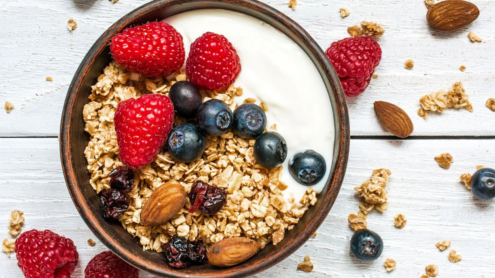

Yogur con Granola y Fruta

Ingredientes (1 porción)
- 1 pote (150-200 g) de yogur natural o de vainilla
- 3 cucharadas de granola
- 1/2 taza de frutas en trozos (banana, frutilla, manzana)
Preparación
- Coloca el yogur en un bowl o vaso.
- Añade la granola por encima y decora con las frutas troceadas.
- Sirve inmediatamente para conservar la textura crujiente de la granola.